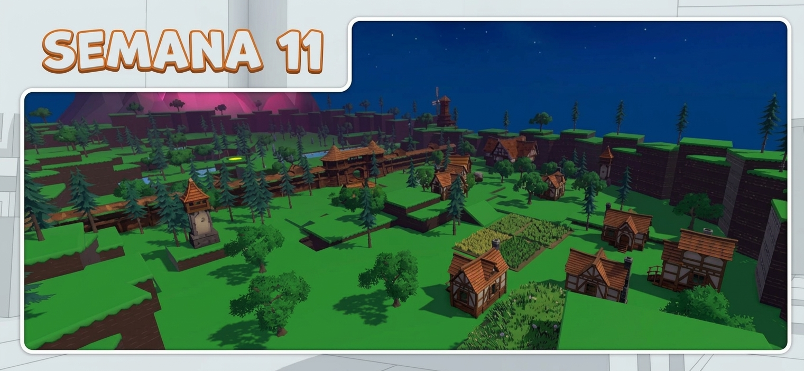
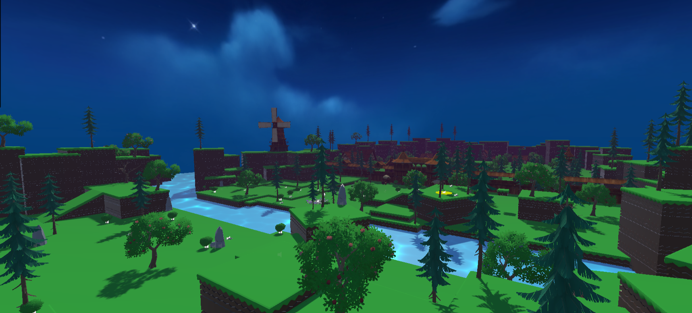
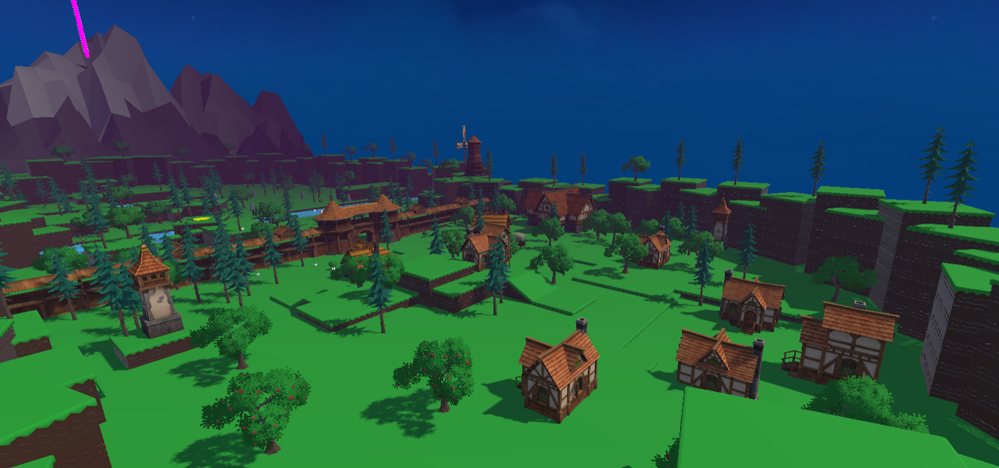

BITÁCORA DE DESARROLLO
Semana 11
Pulido del mapa y animaciones de Spike
Durante esta semana nos enfocamos en mejorar los escenarios de Paw Team, trabajando en los acabados visuales del mapa y creando una nueva zona explorable. También desarrollamos dos animaciones para Spike, relacionadas con su ataque y su transformación al quedarse sin vida.

¿Qué queríamos lograr?
El objetivo principal de esta semana fue continuar mejorando el mapa de Paw Team, dándole una apariencia más pulida y acercándolo al estilo visual que buscamos para el juego. Para ello, reorganizamos el escenario, añadimos más color y mejoramos sus acabados.
También buscamos ampliar el mundo con la creación de una aldea que anteriormente no estaba presente en el mapa. Por otro lado, avanzamos en las animaciones de Spike, desarrollando su movimiento de ataque y la transformación en tótem que ocurre cuando se queda sin vida.
Pulido y organización del mapa
Durante esta semana continuamos trabajando en el mapa para conseguir un escenario más organizado y visualmente trabajado. Ajustamos la distribución de sus elementos para que el entorno tuviera una apariencia más limpia y coherente.
Además, incorporamos más color y mejoramos los acabados de las estructuras y los elementos del escenario. Con estos cambios, el mapa se aleja de una versión más básica y se acerca al estilo artístico que queremos conseguir para Paw Team.

Creación de la aldea
Creamos una nueva zona para el mapa: la aldea. Este espacio no existía en la versión anterior, por lo que su incorporación nos permite ampliar el escenario y comenzar a darle más variedad al mundo que pueden recorrer los jugadores.
Para diseñarla, mantuvimos el estilo visual de Paw Team, buscando que sus estructuras y su apariencia se integraran con el resto del entorno. De esta manera, seguimos construyendo el mundo del juego sin perder la identidad artística que hemos definido.

Animación de ataque de Spike
Desarrollamos una nueva animación para Spike en la que realiza un golpe. Este movimiento busca representar de manera más clara las acciones del personaje durante el combate y complementar las animaciones necesarias para su participación en el juego.
Con este avance continuamos trabajando en la expresividad y el movimiento de Spike, para que sus acciones se vean más naturales y tengan una mejor representación visual durante las partidas.
Transformación de Spike en tótem
También creamos una animación para Spike que se activa cuando se queda sin vida. En este momento, el personaje se transforma en un tótem, representando visualmente el cambio de estado dentro de la partida.
Esta animación nos permite avanzar en la representación visual de una de las mecánicas del juego. Aunque todavía queda trabajo por hacer para integrar y pulir el sistema de tótems, ya contamos con una animación que representa la transformación del personaje.
Resultado de la semana
Esta semana avanzamos principalmente en la construcción del mundo de Paw Team y en las animaciones de Spike. El mapa tiene una apariencia más pulida, la aldea amplía el escenario y las nuevas animaciones nos acercan a una mejor representación de las acciones del personaje.
¿Qué observamos o descubrimos?
Durante este proceso vimos la importancia de trabajar tanto en la organización del escenario como en sus acabados visuales. Añadir color y mejorar los elementos del mapa ayuda a que el mundo tenga una apariencia más definida, mientras que la creación de la aldea permite incorporar nuevos espacios al recorrido.
Por otra parte, las animaciones de Spike nos permiten avanzar en la representación de sus acciones y estados dentro del juego. Sin embargo, todavía necesitamos integrar y pulir algunas mecánicas para que estos elementos funcionen de manera más completa dentro de la experiencia.
¿Qué cambiaremos en la siguiente versión?
- Continuaremos puliendo las mecánicas del juego para mejorar su funcionamiento y la experiencia cooperativa.
- Trabajaremos en la implementación del sistema de tótems, integrando la transformación de los personajes con las mecánicas correspondientes.
- Desarrollaremos nuevas animaciones para el teaser, buscando representar mejor a los personajes y mostrar el estado actual de Paw Team.